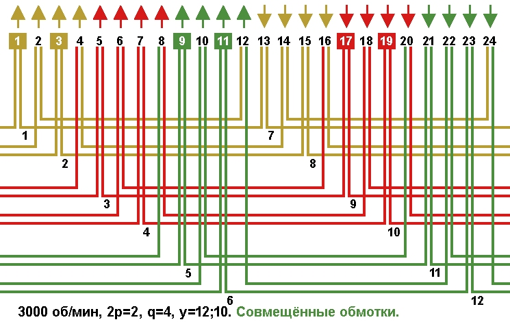
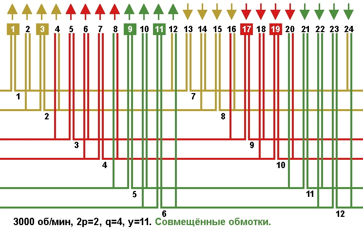
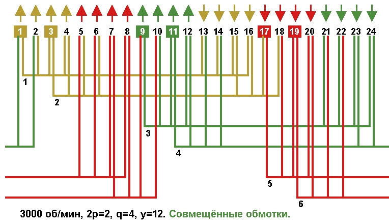
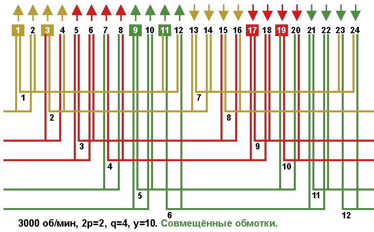
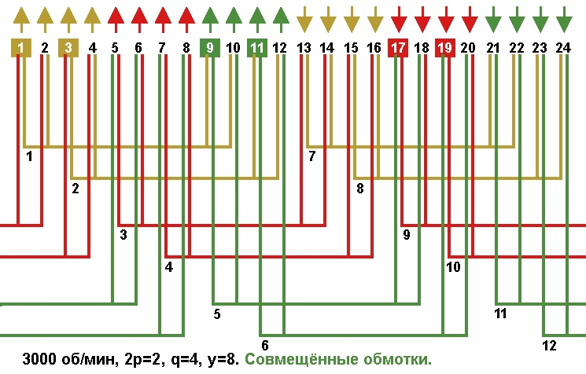

Перейти на главную страницу справочника.
Двухслойные совмещённые обмотки с несплошной фазной зоной в электродвигателях 3000 об/мин, Z1=24.
Сплошная фазная зона основной обмотки занимает 2 паза в полюсе (q=2) для одной стороны катушки. Сплошная фазная зона совмещённой обмотки занимает 2 паза в полюсе (q=2) для одной стороны катушки.
Обмотки с несплошной фазной зоной с расширением на один паз.
- На Рис. 1 схема укладки концентрической двухслойной совмещённой обмотки с несплошной фазной зоной. Средний шаг по пазам укороченный. Расширение фазных зон выполнено на один паз (смотрим первую фазу, катушки жёлтого цвета), как в основной (пазы 12, 13, 14), так и в совмещённой обмотке (пазы 14, 15, 16). Общее расширение фазных зон для трёхфазной обмотки выполнено на один паз (пазы 12, 13, 14, 15, 16), стрелки над пазами 13, 14, 15, 16 указывают размер сплошной фазной зоны.
Рис. 1 
{kind=link}
- На Рис. 2 схема укладки двухслойной равносекционной совмещённой обмотки с несплошной фазной зоной. Средний шаг по пазам укороченный. Расширение фазных зон выполнено на один паз (смотрим первую фазу, катушки жёлтого цвета), как в основной (пазы 12, 13, 14), так и в совмещённой обмотке (пазы 14, 15, 16). Общее расширение фазных зон для трёхфазной обмотки выполнено на один паз (пазы 12, 13, 14, 15, 16), стрелки над пазами 13, 14, 15, 16 указывают размер сплошной фазной зоны.
Рис. 2 
{kind=link}
- Так как у обмоток на Рис. 1 и 2 несплошная фазная зона с расширением на один паз, то и характеристики у этих обмоток будут одинаковые. Пересчёт обмоточных данных при переходе с одной схемы на другую не требуется.
- Для сохранения наилучших характеристик электродвигателя в обмотке с несплошной фазной зоной, схему укладки выбираем с равносекционными катушками Рис. 2.
Литература:
(Недостатки концентрических обмоток) Электрические машины, автор А.И. Вольдек, 1978, стр. 417, 418.
Обмотки с несплошной фазной зоной с расширением в два паза.
- На Рис. 3 схема укладки двухслойной равносекционной совмещённой обмотки с несплошной фазной зоной. Средний шаг по пазам диаметральный. Расширение фазных зон выполнено на два паза (смотрим первую фазу, катушки жёлтого цвета), как в основной (пазы 13, 14, 15, 16), так и в совмещённой обмотке (пазы 15, 16, 17, 18). Общее расширение фазных зон для трёхфазной обмотки выполнено на два паза (пазы 13, 14, 15, 16, 17, 18), стрелки над пазами 13, 14, 15, 16 указывают размер сплошной фазной зоны.
Рис. 3 
{kind=link}
- На Рис. 4 схема укладки двухслойной равносекционной совмещённой обмотки с несплошной фазной зоной. Средний шаг по пазам укороченный. Расширение фазных зон выполнено на два паза (смотрим первую фазу, катушки жёлтого цвета), как в основной (пазы 11, 12, 13, 14), так и в совмещённой обмотке (пазы 13, 14, 15, 16). Общее расширение фазных зон для трёхфазной обмотки выполнено на два паза (пазы 11, 12, 13, 14, 15, 16), стрелки над пазами 13, 14, 15, 16 указывают размер сплошной фазной зоны.
Рис. 4 
{kind=link}
- Так как у обмоток на Рис. 3 и 4 несплошная фазная зона с расширением в два паза, то и характеристики у этих обмоток будут одинаковые. Потребуется пересчёт обмоточных данных при переходе с одной схемы укладки на другую.
- Для сохранения наилучших характеристик электродвигателя в обмотке с несплошной фазной зоной, схему укладки выбираем с минимальным вылетом лобовых частей и с равносекционными катушками Рис. 4.
Обмотки с несплошной фазной зоной с общим расширением в четыре паза.
- На Рис. 5 схема укладки двухслойной равносекционной совмещённой обмотки с несплошной фазной зоной. Средний шаг по пазам укороченный. Расширение фазных зон в шестифазной обмотке выполнено на шесть пазов с визуальным разрывом фазной зоны в два паза (смотрим первую фазу, катушки жёлтого цвета), как в основной (пазы 9, 10, 11, 12, 13, 14), так и в совмещённой обмотке (пазы 11, 12, 13, 14, 15, 16). Общее расширение фазных зон для трёхфазной обмотки выполнено на четыре паза (пазы 9, 10, 11, 12, 13, 14, 15, 16), стрелки над пазами 13, 14, 15, 16 указывают размер сплошной фазной зоны.
Рис. 5 
{kind=link}
- Какая обмотка из рассмотренных выше имеет лучшие характеристики, с расширением фазной зоны на один паз, на два паза или на четыре паза?
Чем больше число пазов расширяющих фазную зону, тем ближе кривая магнитного потока к синусоиде, но чрезмерное увеличение числа пазов расширяющих фазную зону ведёт к ухудшению КПД, поэтому придерживаемся рекомендаций производителей электродвигателей.
Рекомендованное производителем расширение фазных зон для обычных обмоток 3000 об/мин. Z1=24 на 1, 2, 3, 4 и даже 5 пазов с визуальным разрывом фазной зоны.
Лучшим выбором из выше показанных схем будет на Рис. 4 с расширением фазных зон на два паза.
Для нахождения числа пазов расширяющих фазную зону рекомендованных производителем, нужно число пазов на полюс и фазу разделить на 2:
28.03.2019 г.